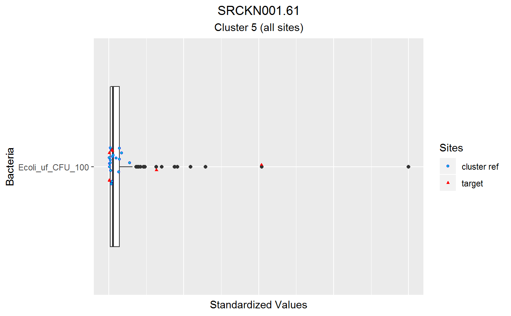
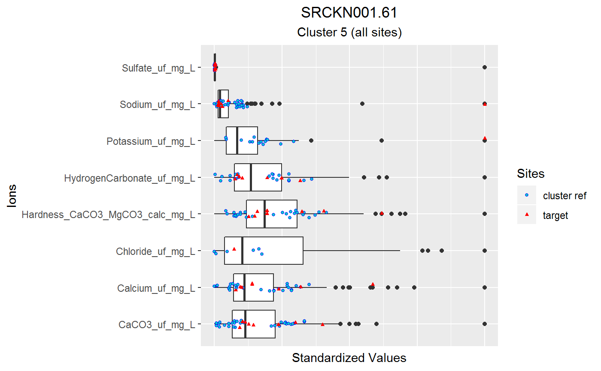
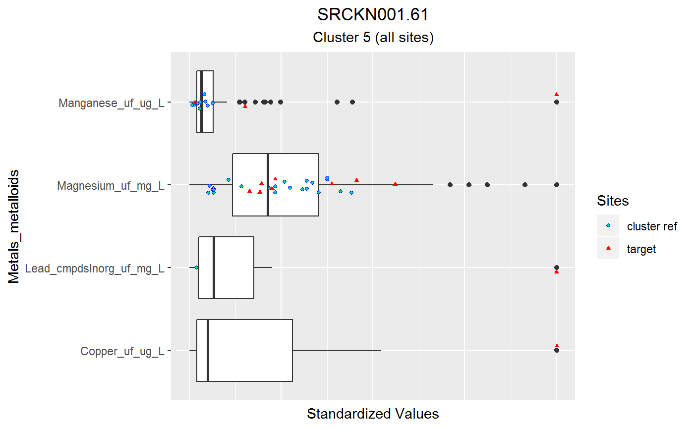
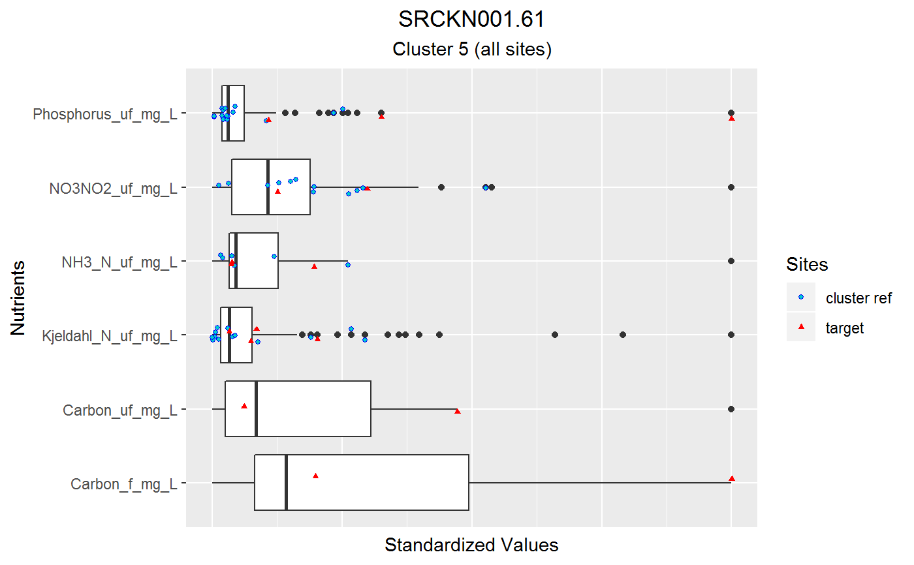
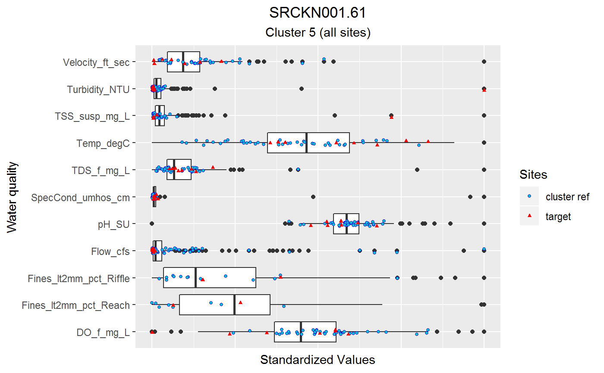

Get verified predictions.
getVerifiedPredictions(TargetSiteID, data.SampSummary, data.bio.taxa.raw, data.chem.info, data.SSTV.totabund, data.MT.bio, matchedData, ref.sites, BioIndex_Val = "IBI", BioIndex_Nar = "NarRat", BioIndex_Nar_Deg = "Violates", dir_results = file.path(getwd(), "Results"), dir_sub = "VerifiedPredictions", biocomm = "bmi")
| TargetSiteID | Site ID |
|---|---|
| data.SampSummary | x |
| data.bio.taxa.raw | x |
| data.chem.info | x |
| data.SSTV.totabund | x |
| data.MT.bio | Master Taxa list for biological data |
| matchedData | matched biological and chemical stressor data. |
| ref.sites | Vector of reference sites IDs. |
| BioIndex_Val | Column name for biological index value; list.MatchBioData$site.b.rsp |
| BioIndex_Nar | Column name for biological index narrative rating; list.MatchBioData$site.b.rsp |
| BioIndex_Nar_Deg | Biological index degraded narrative text; list.MatchBioData$site.b.rsp |
| dir_results | Directory to save plots. Default = working directory and Results. |
| dir_sub | Subdirectory for outputs from this function. Default = "VerifiedPredictions" |
| biocomm | Biological community; algae or BMI. Default = "BMI". |
Results text file and jpeg files to "Results" "VerifiedPredictions" folder in working directory of box plots and a single PDF of all plots.
Required objects:
* data.SampSummary; StationID_Master, CollDate, ChemSampleID, PhabSampID, BMI.Metrics.SampID, Algae.Metrics.SampID
* data.bio.taxa.raw; BMI.Metrics.SampID
* data.chem.info; SSTV, Analyte, SSTV, SensMin, SensMax, TolMin, TolMax
* data.SSTV.totabund; BMI.Metrics.SampID, StationID_Master, ChemSampleID, SSTV.analyte , SensRelAbund, TolRelAbund, SensTaxa, SampleAbundance, TolTaxa
* TargetSiteID
TargetSiteID <- "SRCKN001.61" dir_results <- file.path(getwd(), "Results") # Data getSiteInfo # data, example included with package data.Stations.Info <- data_Sites # need for getSiteInfo and getChemDataSubsets data.SampSummary <- data_SampSummary data.303d.ComID <- data_303d data.bmi.metrics <- data_BMIMetrics data.algae.metrics <- data_AlgMetrics data.mod <- data_ReachMod data.MT.bio <- data_BMIMasterTaxa # Cluster based on elevation category # need for getSiteInfo and getChemDataSubsets elev_cat <- toupper(data.Stations.Info[data.Stations.Info[,"StationID_Master"]==TargetSiteID , "ElevCategory"]) if(elev_cat=="HI"){ data.cluster <- data_Cluster_Hi } else if(elev_cat=="LO") { data.cluster <- data_Cluster_Lo } # Map data # San Diego #flowline <- rgdal::readOGR(dsn = "data_gis/NHDv2_Flowline_Ecoreg85", layer = "NHDv2_eco85_Project") #outline <- rgdal::readOGR(dsn = "data_gis/Eco85", layer = "Ecoregion85") # AZ map_flowline <- data_GIS_Flow_HI map_flowline2 <- data_GIS_Flow_LO if(elev_cat=="HI"){ map_flowline <- data_GIS_Flow_HI } else if(elev_cat=="LO") { map_flowline <- data_GIS_Flow_LO } map_outline <- data_GIS_AZ_Outline # Project site data to USGS Albers Equal Area usgs.aea <- "+proj=aea +lat_1=29.5 +lat_2=45.5 +lat_0=23 +lon_0=-96 +x_0=0 +y_0=0 +datum=NAD83 +units=m +no_defs +ellps=GRS80 +towgs84=0,0,0" # projection for outline my.aea <- "+proj=aea +lat_1=20 +lat_2=60 +lat_0=40 +lon_0=-96 +x_0=0 +y_0=0 +datum=NAD83 +units=m +no_defs +ellps=GRS80 +towgs84=0,0,0" map_proj <- my.aea # dir_sub <- "SiteInfo" # Run getSiteInfo list.SiteSummary <- getSiteInfo(TargetSiteID, dir_results, data.Stations.Info , data.SampSummary, data.303d.ComID , data.bmi.metrics, data.algae.metrics , data.cluster, data.mod , map_proj, map_outline, map_flowline , dir_sub=dir_sub) # Data getChemDataSubsets # data, example included with package data.chem.raw <- data_Chem data.chem.info <- data_ChemInfo site.COMID <- list.SiteSummary$COMID site.Clusters <- list.SiteSummary$ClustIDs # Run getChemDataSubsets list.data <- getChemDataSubsets(TargetSiteID, comid=site.COMID, cluster=site.Clusters , data.cluster=data.cluster, data.Stations.Info=data.Stations.Info , data.chem.raw=data.chem.raw, data.chem.info=data.chem.info) # Data getStressorList chem.info <- list.data$chem.info cluster.chem <- list.data$cluster.chem cluster.samps <- list.data$cluster.samps ref.sites <- list.data$ref.sites site.chem <- list.data$site.chem dir_sub <- "CandidateCauses" # set cutoff for possible stressor identification probsLow <- 0.10 probsHigh <- 0.90 biocomm <- "bmi" # Run getStressorList list.stressors <- getStressorList(TargetSiteID, site.Clusters, chem.info, cluster.chem , cluster.samps, ref.sites, site.chem , probsHigh, probsLow, biocomm, dir_results , dir_sub)




#> [1] 3 #> [1] 4 #> [1] 5 #> [1] 6 #> [1] 7 #> [1] 8 #> [1] 9 #> [1] 10 #> [1] 11 #> [1] 12 #> [1] 13 #> [1] 14 #> [1] 15 #> [1] 16 #> [1] 17 #> [1] 18 #> [1] 19 #> [1] 20 #> [1] 21 #> [1] 22 #> [1] 23 #> [1] 24 #> [1] 25 #> [1] 26 #> [1] 27 #> [1] 28 #> [1] 29 #> [1] 30 #> [1] 31 #> [1] 32 #> [1] 33 #> [1] 34 #> [1] 35 #> [1] 36 #> [1] 37 #> [1] 38 #> [1] 39# Data getBMIMatches ## remove "none" stressors <- list.stressors$stressors[list.stressors$stressors != "none"] stressors_logtransf <- list.stressors$stressors_LogTransf[list.stressors$stressors != "none"] # Run getBioMatches biocomm <- "BMI" data.bio.metrics <- data_BMIMetrics list.MatchBioData<- getBioMatches(stressors, list.data, list.SiteSummary, data.SampSummary , data.chem.raw, data.bio.metrics, biocomm) # Data getVerifiedPredictions # data import, example # data.bio.taxa.raw <- read.delim(paste(myDir.Data,"data.bmi.taxa.raw.tab",sep="")) # data.SSTV.totabund <- read.delim(paste(myDir.Data,"data.totabund.bySample.tab",sep="")) # # data, example included with package data.bio.taxa.raw <- data_BMIcounts data.SSTV.totabund <- data_BMIRelAbund BioIndex_Val <- "IBI" BioIndex_Nar <- "NarRat" BioIndex_Nar_Deg <- "Violates" dir_sub <- "VerifiedPredictions" biocomm <- "bmi" # Run getVerifiedPredictions getVerifiedPredictions(TargetSiteID , data.SampSummary , data.bio.taxa.raw , data.chem.info , data.SSTV.totabund , data.MT.bio , list.MatchBioData , ref.sites , BioIndex_Val , BioIndex_Nar , BioIndex_Nar_Deg , dir_results , dir_sub)#> Error in nrow(list.SiteSummary$BMImetrics): object 'list.SiteSummary' not found